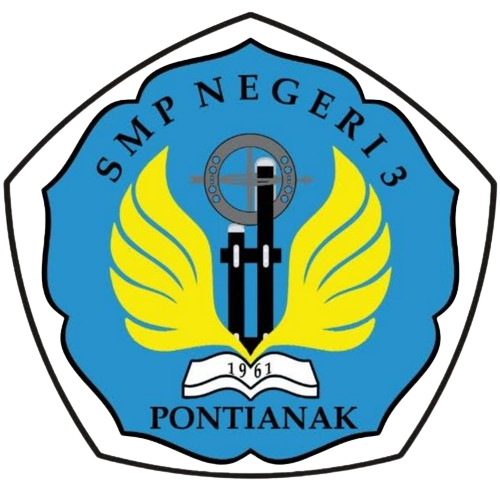
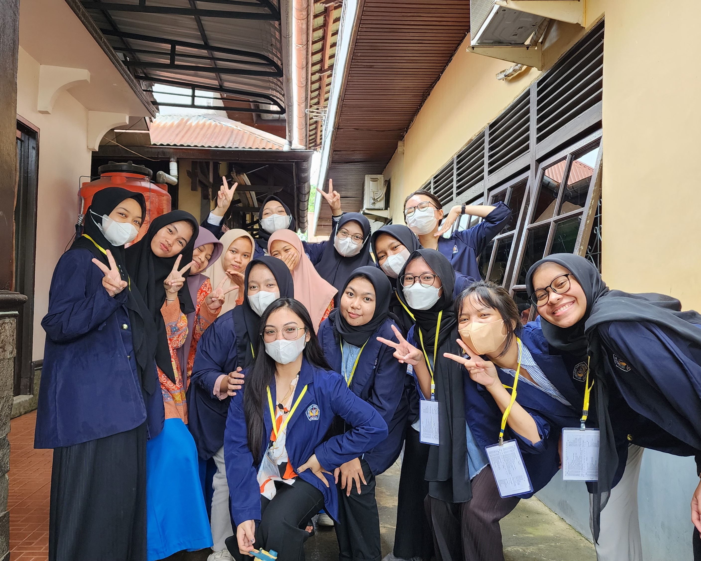
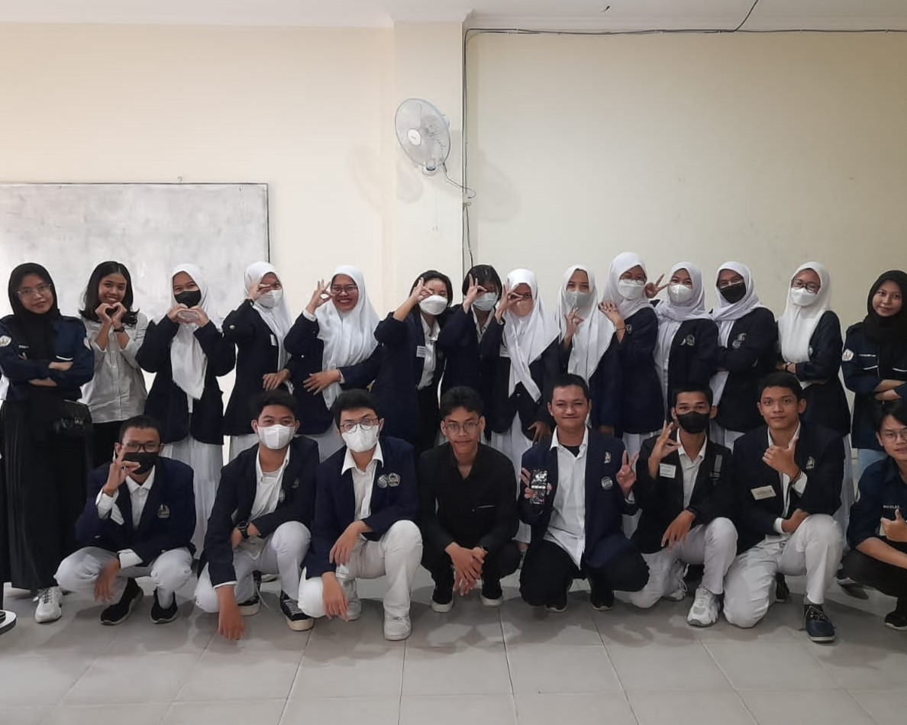
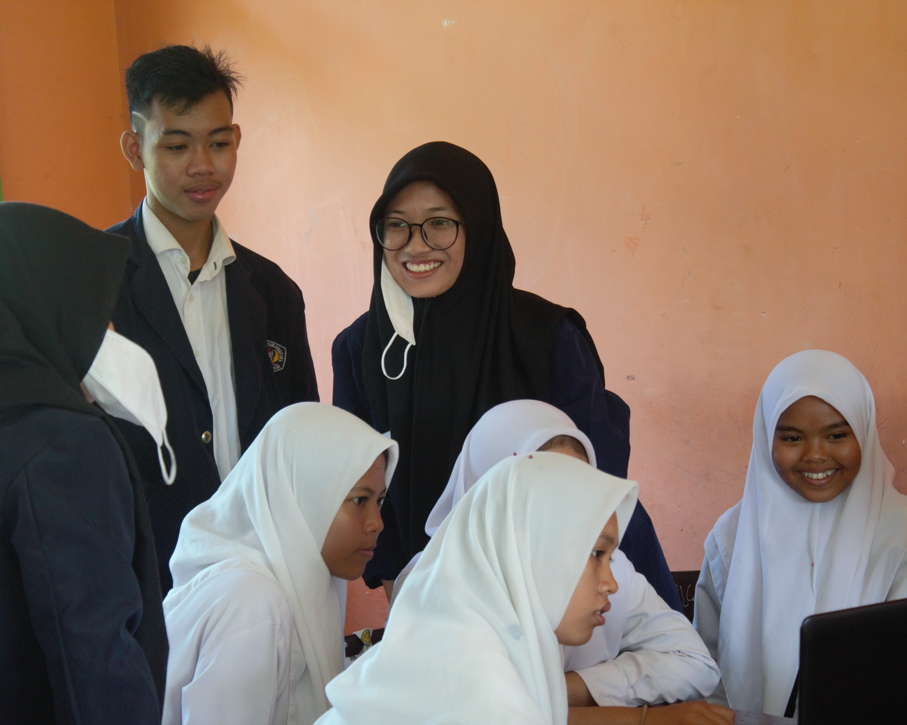
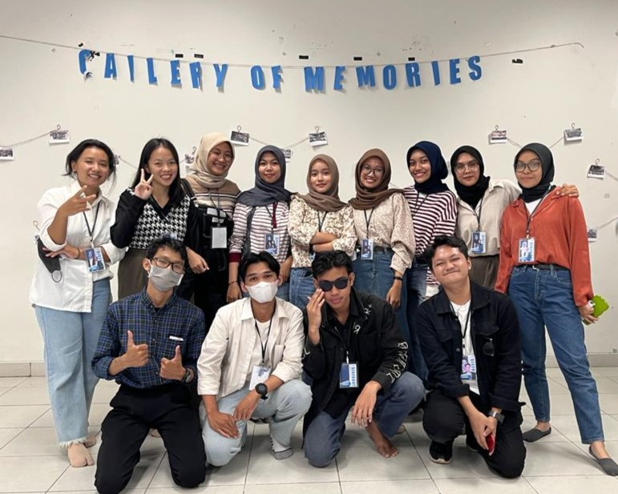
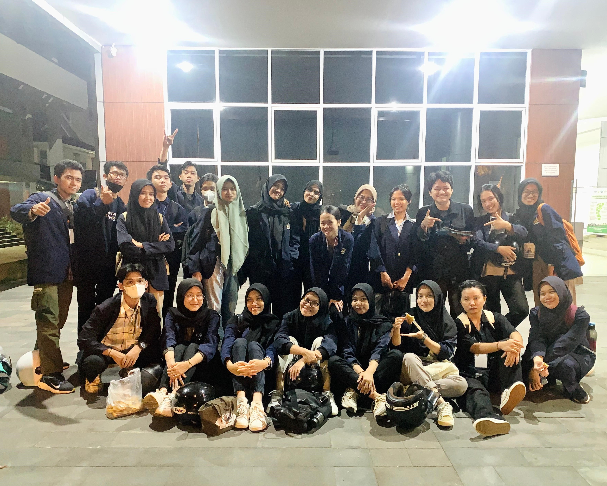
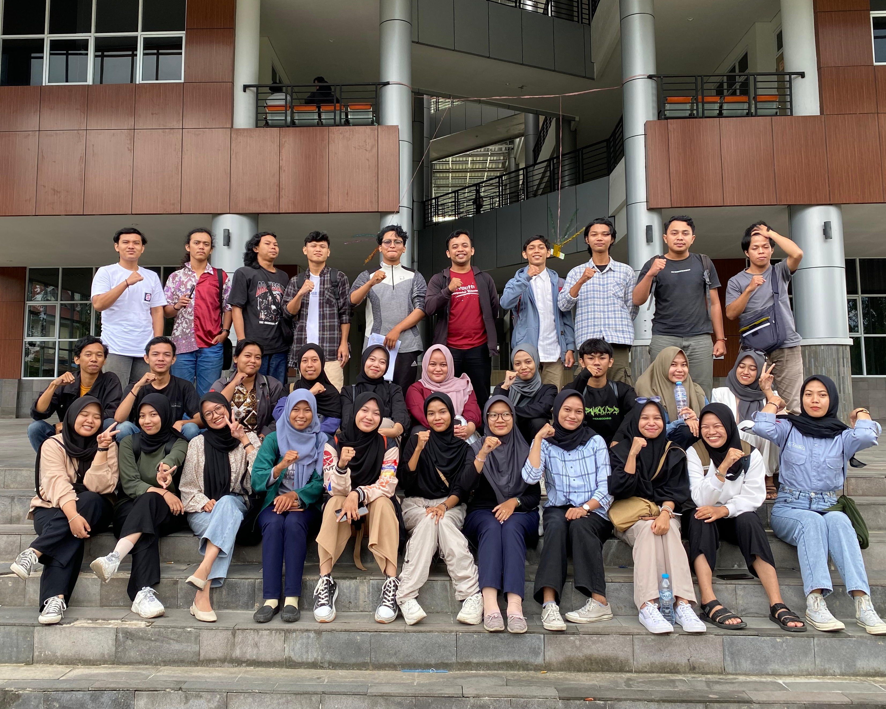

Biodata Saya
Sebelum memutuskan keterlibatan saya pada suatu proyek Anda, silahkan mengenal saya lebih jauh terlebih dahulu melalui rangkuman yang berisi biodata diri saya berikut ini.
Profil
Adinda Latifah atau biasa dipanggil dengan sebutan dila dan dinda ini merupakan seorang mahasiswa asli dari Pontianak, Kalimantan Barat yang memiliki tipe kepribadian INFJ dimana tipe kepribadian ini terbilang cukup langka di dunia, yaitu dengan presentase sekitar 1-3% dari populasi.- Nama : Adinda Latifah
- NIM : H1101221022
- Tanggal Lahir : Pontianak, 12 November 2004
- Jenis Kelamin : Perempuan
- Email : h1101221022@student.untan.ac.id
- Nomor Telepon : +62 8315 3513 142
- Alamat : Jl. Sungai Raya Dalam
- Hobi : Membaca
- Pekerjaan : Mahasiswa
- Asal : Pontianak, Kalimantan Barat
- Program Studi : Sistem Informasi
- Fakultas : Matematika dan Ilmu Pengetahuan Alam
- Institusi : Universitas Tanjungpura
- Semester : 4 (Empat)
- IPK : 3.94/4.00
- Cita-cita : Programmer
- Motto : What's meant to be will always find a way.
Skills
Beberapa bahasa pemrograman dan tools pendukung terkait dengan teknologi komputer yang saya kuasai.


- Python
- HTML
- CSS
- Javascript
- PHP
- SQL
- Basic
- Basic
- Basic
- Basic
- Basic
- Basic


- Bootstrap
- jQuery
- Gitbash
- Github
- phpMyAdmin
- Basic
- Basic
- Basic
- Basic
- Basic


- Visual Studio Code
- Figma
- Google Tools
- Microsoft Office
- Medium
- Medium
- Medium
- Medium
Mencakup riwayat terkait pendidikan dan pengalaman yang diperoleh selama perkuliahan.
Pendidikan
Seluruh riwayat pendidikan yang ditempuh hingga sekarang
TK Makarti Muktitama
2009 - 2010Kabupaten Kubu Raya

SD Negeri 26
2010 - 2016Kecamatan Pontianak Tenggara

SMP Negeri 3
2016 - 2019Kota Pontianak

MA Negeri 2
2019 - 2022Jurusan Matematika dan Ilmu Pengetahuan Alam

Universitas Tanjungpura
2022 - SekarangProgram studi Sistem Informasi
Pengalaman
Dokumentasi kegiatan dan kepanitiaan selama di perkuliahan





